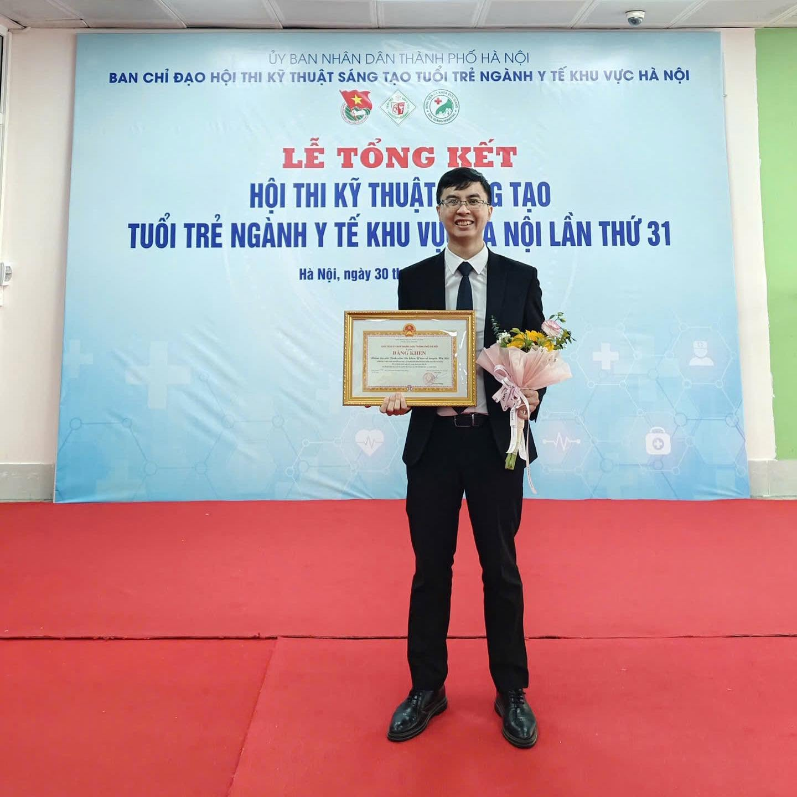

Đau cột sống mạn tính là một trong những nguyên nhân hàng đầu gây suy giảm chức năng và giảm chất lượng cuộc sống trên toàn cầu. Theo Lancet Low Back Pain Series, đau thắt lưng hiện là nguyên nhân gây tàn tật đứng hàng đầu thế giới, tạo ra gánh nặng đáng kể đối với người bệnh, hệ thống y tế và xã hội.1 Mặc dù các phương pháp điều trị đau cột sống ngày càng đa dạng, từ thuốc, vật lý trị liệu, can thiệp xâm lấn đến các phương pháp Y học cổ truyền, xu hướng điều trị hiện đại ngày càng nhấn mạnh vai trò trung tâm của vận động và tập luyện trong quá trình phục hồi chức năng.
Trong thực hành lâm sàng, nhiều bệnh nhân đau cột sống mạn tính có xu hướng giảm hoặc tránh vận động do lo ngại rằng hoạt động thể lực sẽ làm tổn thương cột sống nặng hơn. Quan điểm này từng khá phổ biến trong quá khứ khi đau được xem chủ yếu là hậu quả trực tiếp của tổn thương cấu trúc. Tuy nhiên, những hiểu biết mới về sinh lý học đau cho thấy mối liên quan giữa tổn thương giải phẫu và triệu chứng lâm sàng không phải lúc nào cũng tương ứng. Nhiều nghiên cứu hình ảnh học ghi nhận các thay đổi như thoái hóa đĩa đệm, phồng đĩa đệm hoặc thoái hóa khớp cột sống có thể xuất hiện ở những người hoàn toàn không có triệu chứng đau.1 Điều này cho thấy đau cột sống mạn tính là một tình trạng phức tạp, chịu ảnh hưởng đồng thời của các yếu tố sinh học, tâm lý và xã hội.
Một trong những cơ chế được nghiên cứu nhiều nhất ở bệnh nhân đau cột sống mạn tính là hiện tượng sợ vận động và né tránh vận động (fear-avoidance behavior). Khi người bệnh tin rằng vận động sẽ làm tình trạng bệnh trở nên nghiêm trọng hơn, họ có xu hướng hạn chế các hoạt động thường ngày như cúi người, đi bộ, mang vác hoặc tập thể dục. Sự giảm hoạt động kéo dài dẫn đến giảm sức mạnh cơ, giảm sức bền tim phổi, suy giảm khả năng chịu tải của hệ cơ xương khớp và làm tăng mức độ khuyết tật chức năng.2 Hệ quả là người bệnh ngày càng phụ thuộc vào các biện pháp giảm đau thụ động trong khi khả năng vận động tiếp tục suy giảm.
Chính vì vậy, vận động hiện được xem là một thành phần cốt lõi trong điều trị đau cột sống mạn tính. Không giống quan niệm trước đây chỉ tập trung vào việc giảm triệu chứng, các chương trình phục hồi chức năng hiện đại hướng tới mục tiêu khôi phục năng lực vận động, cải thiện chức năng và tăng khả năng tham gia các hoạt động trong cuộc sống hằng ngày. Các hướng dẫn thực hành lâm sàng của NICE và nhiều tổ chức chuyên ngành quốc tế đều khuyến cáo duy trì hoạt động thể lực và tập luyện như một trong những biện pháp điều trị nền tảng đối với đau cột sống mạn tính.3

Lợi ích của vận động không chỉ giới hạn ở việc tăng cường sức mạnh cơ hoặc cải thiện độ linh hoạt của cột sống. Các nghiên cứu cho thấy hoạt động thể lực có thể tác động lên nhiều cơ chế liên quan đến đau mạn tính. Về mặt cơ học, tập luyện giúp cải thiện sức mạnh, sức bền và khả năng kiểm soát vận động của hệ cơ xương khớp. Về mặt thần kinh, vận động có khả năng điều hòa quá trình xử lý tín hiệu đau ở hệ thần kinh trung ương, tăng cường cơ chế ức chế đau nội sinh và giảm hiện tượng tăng nhạy cảm thần kinh ở một số bệnh nhân đau mạn tính.7 Ngoài ra, tập luyện còn góp phần cải thiện chất lượng giấc ngủ, tâm trạng và sự tự tin của người bệnh khi tham gia các hoạt động thể chất.
Một câu hỏi thường gặp trong điều trị đau cột sống mạn tính là liệu có tồn tại một hình thức tập luyện vượt trội hơn tất cả các phương pháp khác hay không. Bằng chứng hiện tại cho thấy câu trả lời có lẽ là không. Tổng quan Cochrane năm 2021 ghi nhận rằng nhiều hình thức tập luyện khác nhau đều có thể mang lại lợi ích đối với đau cột sống mạn tính, bao gồm tập tăng cường sức mạnh, bài tập kiểm soát vận động, yoga, Pilates, đi bộ hoặc các chương trình tập luyện aerobic.4 Tương tự, Foster và cộng sự cho rằng hiệu quả điều trị có thể phụ thuộc nhiều hơn vào mức độ phù hợp với từng bệnh nhân, khả năng tuân thủ và duy trì tập luyện lâu dài hơn là bản thân loại hình vận động được lựa chọn.6
Quan điểm này phù hợp với xu hướng điều trị cá thể hóa trong phục hồi chức năng. Thay vì tìm kiếm một bài tập "tốt nhất" cho tất cả bệnh nhân, người thầy thuốc cần xác định mục tiêu điều trị, mức độ chức năng hiện tại, khả năng dung nạp vận động và các yếu tố tâm lý – xã hội liên quan để xây dựng chương trình tập luyện phù hợp cho từng cá thể. Trong nhiều trường hợp, nguyên tắc tăng tải dần (graded activity hoặc graded exposure) được áp dụng nhằm giúp người bệnh từng bước lấy lại sự tự tin khi vận động và cải thiện khả năng chịu tải của cơ thể.
Vai trò của vận động cũng cần được nhìn nhận trong bối cảnh điều trị đa mô thức. Các biện pháp như giáo dục sức khỏe, vật lý trị liệu, trị liệu bằng tay, châm cứu hoặc các kỹ thuật Y học cổ truyền có thể hỗ trợ kiểm soát triệu chứng đau và cải thiện khả năng vận động trong giai đoạn đầu. Tuy nhiên, hiệu quả lâu dài khó có thể đạt được nếu người bệnh không được khuyến khích tái thiết lập hoạt động thể lực và phục hồi chức năng vận động. Theo khuyến cáo của Tổ chức Y tế Thế giới (WHO) năm 2023, các chiến lược điều trị đau thắt lưng mạn tính nên ưu tiên những can thiệp giúp người bệnh duy trì hoạt động và nâng cao chức năng thay vì chỉ tập trung vào giảm đau đơn thuần.8
Trong lĩnh vực Y học cổ truyền, quan điểm này cũng ngày càng nhận được sự quan tâm. Các phương pháp như châm cứu, xoa bóp bấm huyệt hoặc các kỹ thuật không dùng thuốc có thể đóng vai trò quan trọng trong kiểm soát triệu chứng, giảm đau và tạo điều kiện thuận lợi để người bệnh tham gia chương trình vận động. Tuy nhiên, mục tiêu cuối cùng vẫn là giúp người bệnh phục hồi khả năng vận động, cải thiện chức năng và trở lại với các hoạt động thường ngày. Việc kết hợp các phương pháp điều trị triệu chứng với chương trình vận động có cấu trúc được xem là hướng tiếp cận phù hợp với xu thế điều trị cơ xương khớp hiện đại.

Tóm lại, bằng chứng hiện nay cho thấy vận động không đơn thuần là một khuyến cáo về lối sống mà là một biện pháp điều trị có cơ sở khoa học đối với đau cột sống mạn tính. Thông qua các tác động lên hệ cơ xương khớp, hệ thần kinh và chức năng toàn thân, vận động góp phần cải thiện đau, tăng khả năng hoạt động và nâng cao chất lượng cuộc sống của người bệnh. Trong bối cảnh điều trị hiện đại, thành công không chỉ được đánh giá bằng mức độ giảm đau mà còn bằng khả năng người bệnh quay trở lại với công việc, sinh hoạt và những hoạt động có ý nghĩa đối với cuộc sống của họ.